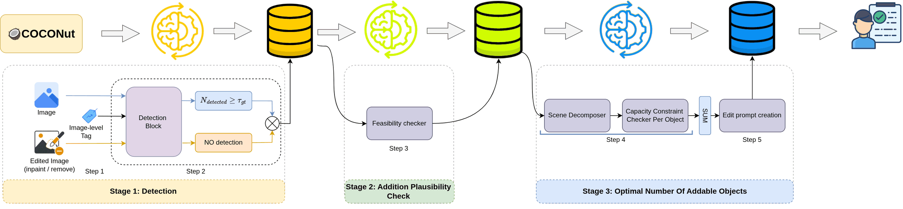
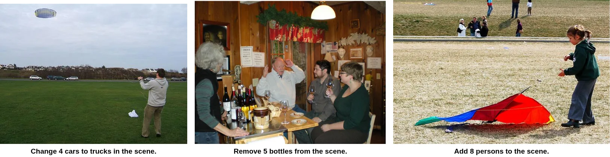
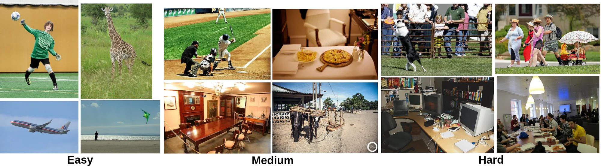
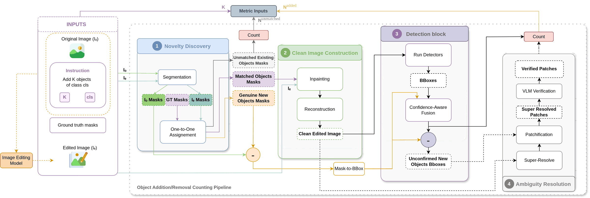
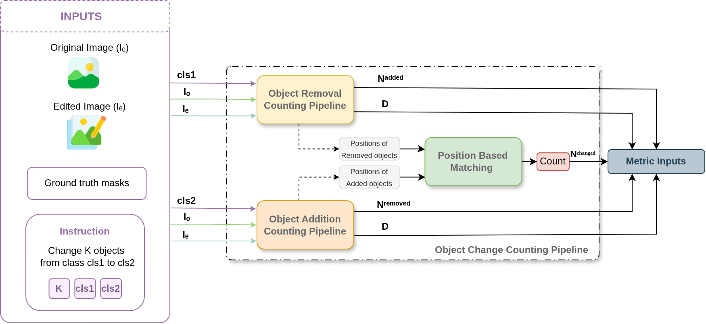
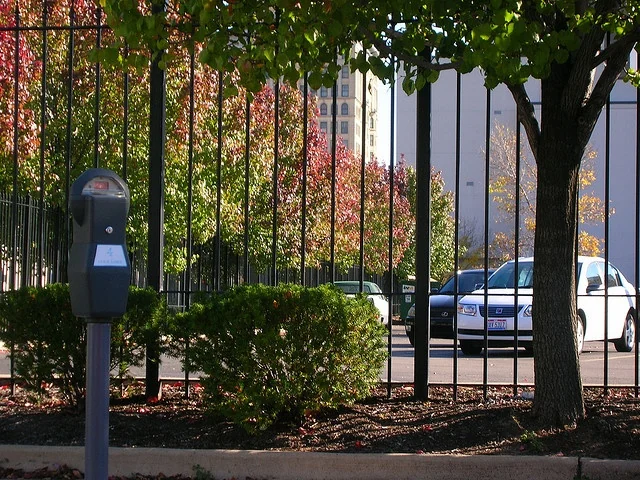
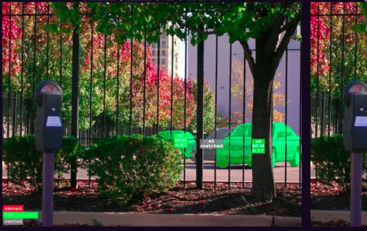

Novelty discovery
Presence-gated SAM 3 segments the category in both images. A drift-robust geometric matcher with Hungarian assignment separates preserved objects from genuinely new ones, and repairs missing panoptic labels.
Abstract
Instruction-based image editing models can now add or remove a specified number of objects, or change their category, while preserving the scene. Yet these models often fail to produce the correct number, and these failures grow sharply as scenes become more complex and the requested count increases. Current benchmarks largely miss this problem: they score edits with holistic similarity metrics or with vision-language model (VLM) judges that are themselves poor at counting, so numerical errors go unnoticed or are graded incorrectly.
We address this issue with ABACUS, a new benchmark, evaluation protocol and dedicated scoring metric for numerical image editing. Our protocol is judge-free: no VLM or MLLM scores an edit or counts objects. Instead, it verifies each edit at the instance level against panoptic ground truth confirmed by detector consensus, checking both that the exact requested count was achieved and that the rest of the scene was preserved, across the add, remove and change operations. Evaluating leading image editors reveals substantial numerical editing failures that worsen with scene complexity and object count, failures that prior benchmarks overlooked or misjudged.
Why a new evaluator
Similarity metrics such as CLIP, DINO or FID are blind to instance counts. VLM judges are circular: their counting accuracy collapses as the number and variety of objects grows, and they have no notion of instance correspondence. When an editor turns one of two people into a third, or deletes the originals and paints the targets elsewhere, the judge still reports success.
ABACUS reconstructs what happened to every object instance. Each object receives a verdict, kept, added, removed or transformed, from segmentation, geometric matching and the independent agreement of two detectors.
Full Partial Absent
| Benchmark | Instance GT | GT masks | Multi-instance | Judge-free | Mask preservation | Count metric | Grounded count |
|---|---|---|---|---|---|---|---|
| EditVal | |||||||
| MagicBrush | |||||||
| ImgEdit-Bench | |||||||
| I2EBench | |||||||
| CompBench | |||||||
| KRIS-Bench | |||||||
| RefEdit-Bench | |||||||
| ICE-Bench | |||||||
| VIBE | |||||||
| GIE-Bench | |||||||
| EdiVal-Agent | |||||||
| ABACUS (ours) |
The benchmark
Every instruction is paired with a known target count and a reliable instance-level reference, built from COCO images with COCONut panoptic annotations and confirmed by two independent detectors. Every sample is checked by two annotators.

COCO images with COCONut panoptic masks give the instance count of every image and category pair.
RF-DETR and Co-DETR must both confirm the count, and both must see zero instances after a non-generative inpainting removes them.
A VLM checks that the scene can plausibly receive one more instance. It never sets a count or scores an edit.
The scene is decomposed to estimate how many new instances would look natural, bounding the target count.
Simple instructions such as add K boats. Two annotators and a final verifier check feasibility and the difficulty tier.
| Tier | Add | Remove | Change | Total |
|---|---|---|---|---|
| Easy | 1,159 | 1,146 | 1,000 | 3,305 |
| Medium | 1,363 | 1,340 | 1,128 | 3,831 |
| Hard | 1,374 | 1,308 | 1,126 | 3,808 |
| Total | 3,896 | 3,794 | 3,254 | 10,944 |
| Mean K | 3.20 | 2.32 | 2.30 | |
| Max K | 15 | 10 | 10 |
3,845 COCO source images, all 80 categories, 72 change pairs.
Difficulty is a composite of three rank-normalized axes: foreground coverage, target capacity and target-object scale. Their sum is split at its terciles into easy, medium and hard.
The split is non-circular. Attributes that never enter the score, such as the number of instances and categories, still separate the tiers, and every editor's score drops from easy to hard.


Evaluation protocol
Given the source image, the edited image and the instruction, ABACUS assigns each instance a verdict, then checks the exact count and the conservation of the scene. Addition and removal share one pipeline; change couples the two.

Presence-gated SAM 3 segments the category in both images. A drift-robust geometric matcher with Hungarian assignment separates preserved objects from genuinely new ones, and repairs missing panoptic labels.
Preserved objects are erased with classical, non-generative inpainting so that only the additions remain, even when they overlap existing objects.
RF-DETR and Co-DETR vote independently on every candidate region. An instance counts only when both agree.
The rare unconfirmed crop (6.4% of instances) is super-resolved and checked by a yes or no category question. The VLM never counts and never judges the edit.

A change from one class to another is credited only where a removed source instance and an added target instance coincide in location. Delete-here, paint-there edits that a naive remove plus add count would accept are rejected.
Dice on counts between the delivered count d and the requested K. Equal to 1 only when they match; over- and under-shooting are penalized alike.
Harmonic mean of a RAFT optical-flow term for spatial drift and MS-SSIM for appearance, measured on the background only.
Original-category conservation penalizes reaching the count by overwriting, relocating or deleting objects that were already there.
The product is necessary: under a plain average, an editor that returns the image untouched would score 0.667, above six of the seven real editors. The product gives it 0.
Results
Even the strongest editor delivers the exact requested number on fewer than half of the edits, and every editor degrades from easy to hard scenes. Count fidelity is the weakest factor; original-category conservation is close behind.
ProprietaryOpen
Scores in [0, 1], higher is better. Click a column to sort. E, M, H: easy, medium and hard tiers. Overall factors are averaged over all 10,944 edits and the Score is their product. The three proprietary models are statistically tied: their 95% bootstrap intervals overlap.
Exact-count agreement on 600 human-annotated edits, by difficulty tier. Solo VLM: Qwen3.6-27B in thinking mode. Single detector: Grounding-DINO.
Exact-count agreement on 200 edits per editor, ordered from the strongest editor to the weakest. ABACUS barely moves while single-tool counters collapse.
0.82
exact-count agreement with humans, against 0.55 for a top VLM counter and 0.28 for a single open-vocabulary detector.
0.09
gap to the two-annotator human ceiling on hard scenes, and the gap does not widen with difficulty.
0.88
rank correlation between the full ABACUS Score and human overall ratings.
Walkthroughs
Each panel traces the pipeline stage by stage on a real edit. Select an example, then click the image to enlarge it.
Asked to add 2 cars, the editor blends the new cars in so naturally that the before and after look like the same street. The geometric matcher marks the pre-existing car as matched (e1) and the two inserted cars as new (e0, e2): a precise, grounded count for a near-imperceptible edit.


Citation
If you find ABACUS useful in your research, please consider citing:
@inproceedings{lassoued2027abacus,
title = {{ABACUS}: A Benchmark for Image Editing Models to Assess
Object Category and Counting Under Scene Conservation},
author = {Lassoued, Aymen and Loesch, Angelique and Audigier, Romaric},
booktitle = {Proceedings of the IEEE/CVF Winter Conference on
Applications of Computer Vision (WACV)},
year = {2027}
}